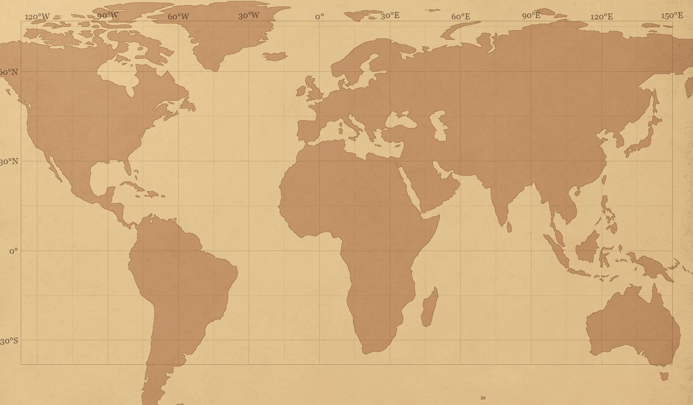

邝修录致儿子邝振成
在澳大利亚，一位父亲从时局说到家事，叮嘱儿子及早准备粮食。
世界大二次之大战，即在目前，此次大战，在于远东，我中国当其要冲，战场在于中国领土之上。
白话释义
他担心新的世界大战即将爆发，认为中国会处在远东战事的关键位置。在同一封信中，他提醒儿子，战事一旦阻断交通，粮食可能买不到，应当早作准备。
原件图与节录据现场展板照片，展板署罗达全供图。白话释义为本页编写。释义参考 ↗
一封从澳大利亚寄回台山，一封从台山寄向美国。两封家书里，各有一端的人在等待消息。
在澳大利亚，一位父亲从时局说到家事，叮嘱儿子及早准备粮食。
世界大二次之大战，即在目前，此次大战，在于远东，我中国当其要冲，战场在于中国领土之上。
他担心新的世界大战即将爆发，认为中国会处在远东战事的关键位置。在同一封信中，他提醒儿子，战事一旦阻断交通，粮食可能买不到，应当早作准备。
原件图与节录据现场展板照片，展板署罗达全供图。白话释义为本页编写。释义参考 ↗
在台山，桂明写下村民逃难、日军入村劫掠和家中遭遇。
人心惊惶，村民走乱纷纷，无家可居，妻子离散，
……凡村近冲蒌处，每日被日军入村屋劫掠，连鸡捉去……
桂明向海外亲友描述，日军占据台城、冲蒌和斗山后，村民仓皇逃难，家人离散。冲蒌附近村屋遭到劫掠，连家禽也被抢走。他还在信中记下了父亲受伤后去世的消息。
原件图与节录据现场展板照片，展板署关翌春供图。白话释义为本页编写。释义参考 ↗

纽约 驼峰航线 重庆 台山一封信送到以后，故事还留在纸上。
写给亲人的叮嘱、寄回去的钱、信封上一次次盖下的邮戳，留下了华侨与侨乡的生活。，「侨批档案——海外华侨银信」入选联合国教科文组织《世界记忆名录》。